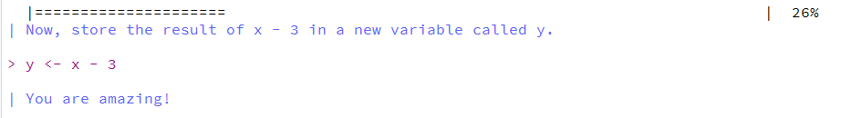
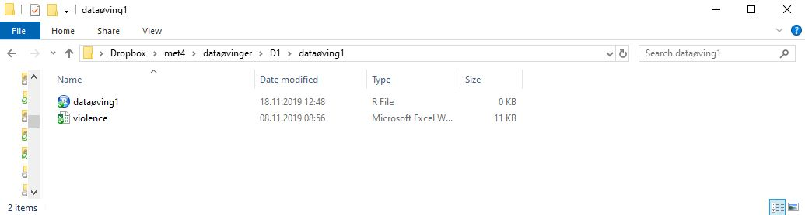
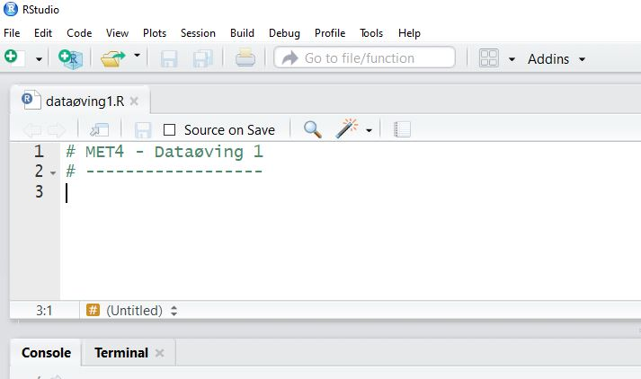
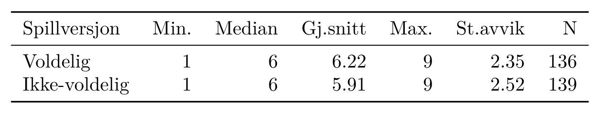
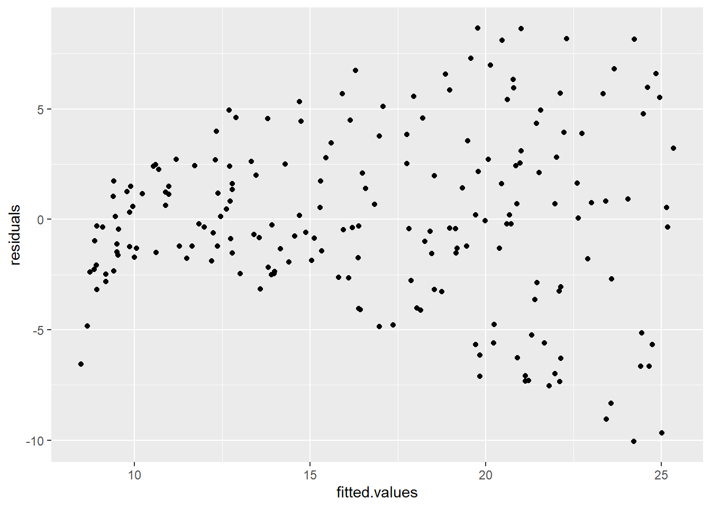

7.1 Dataøving 1
7.1.1 Innledning
Velkommen til den første dataøvelsen i MET4. I denne øvelsen skal vi bli litt kjent med verktøyene R og Rstudio som brukes i datalabbene. Disse verktøyene er også essensielle for gjennomføringen av den obligatoriske innleveringen og på hjemmeksamen. Den første delen av øvingen inneholder praktisk informasjon om bruk av R og Rstudio etterfulgt av oppgaver.
7.1.2 Om R og Rstudio
R er et program/programmeringsspråk som er spesialdesignet til å utføre statistiske analyser. R er basert på at du må skrive forskjellige kommandoer for å utføre utregninger og analyser. Gjennomsnittet av 3, 2 og 5 finner man for eksempel ved å skrive:
Dette kan for mange være litt uvant i starten, men datalabbene vil gi deg god trening på denne type tankegang.
Rstudio er et program som gjør det enklere å bruke R. På samme måte som Word kan hjelpe deg til å lage fine og oversiktlige tekster, kan Rstudio hjelpe deg til å utføre fine og oversiktlige statistiske analyser. Rstudio er et redigeringsprogram som vi i dette kurset skal bruke til å redigere og utføre R-kommandoer.
7.1.2.1 Installere R og Rstudio
Bruker du din egen datamaskin kan du enkelt laste ned og installere R og Rstudio. Begge programvarene er gratis og kan installeres med å følge instruksene under. Får du problemer kan du få en av studentassistentene til å hjelpe deg.
- Start med å installere R:
- Gå til r-project.org
- Last ned versjonen som passer ditt operativsystem (Windows/Mac/Linux)
- Kjør installasjonsfilen og følg instruksene. Standard innstillingene skal være greie å bruke, så du kan trykke neste/ok til installasjonen er ferdig.
- Installer så RStudio:
- rstudio.com, og naviger deg frem til siden for RStudio. Du skal der laste ned desktop-versjonen av programmet (“Open source edition”) for ditt operativsystem og installere på vanlig måte.
- Kjør installasjonsfilen som lastes ned og følg instruksene
7.1.2.2 Vinduene i Rstudio og det å jobbe med R
Første gang du åpner Rstudio vil du se tre vinduer. Et fjerde vindu åpner du med å klikke på File i menyen, så New File, og så R Script. Figur 7.1 viser en oversikt over de fire vinduene. Det er viktig at du forstår forskjellen på de to vinduene til venstre.
Figur 7.1: Oversikt over vinduene i RStudio.
Nederste vindu til venstre (b) viser R-konsollen og det er her alle utregninger blir gjennomført. I dette vinduet kan du for eksempel skrive
## [1] 57Her er (3*5 - 3/4)*(2 + 2) en såkalt kommando og det er programmet R som finner ut hva du mener med kommandoen og gir deg svaret 57 i retur. Du kan se at R tillater standard matteoperasjoner som gange, deling, pluss og minus (*, /, +, -).
R er det vi kaller ‘objektbasert’, som betyr at du kan definere ‘objekter’ (ofte kalt variabler). Utregningen over kan for eksempel også regnes ut ved å skrive:
## [1] 57Her er a og b objekter/variabler som vi definerer ved bruk av ‘tildelingspilen’ <- (du kan også bruke =). Det går an å lagre objekter i egne filer, men vi skal se at det stort sett er smartere å lagre ‘oppskriften’ (selve koden) på hvordan de lages i en egen .R-fil.
Det øverste vinduet til venstre (a) viser en .R-fil (et skript). En .R-fil fungerer som et manuskript med R-kommandoer (kode) og kan lagres slik at du kan senere kan se hvilke kommandoer du har brukt i analysen og eventuelt fortsette der du slapp. I Del 2 av denne dataøvingen skal du selv lage en .R-fil som inneholder alle kommandoer som brukes i en enkel analyse. Når du vil at R skal utføre noen av kommandoene du har skrevet i .R-filen markerer du bare disse (eller lar pekeren stå i linjen du vil kjøre) og trykker Ctrl + Enter (Cmd + Enter på Mac):
Figur 7.2: Utførelse av kommandoer du har skrevet i R filen. Marker eller la pekeren stå i linjen du vil kjøre og trykk ctrl + Enter (Cmd + Enter på Mac)
Vinduet nederst til høyre (d) vil vise blant annet figurer du lager og hjelpetekst. Vinduet øverst til høyre (c) gir deg en oversikt over hvilke objekter du har laget og er spesielt nyttig hvis du vil ta en nærmere titt på et datasett du har lest inn.
Det er viktig at du forstår forskjellen på de to vinduene til venstre, altså .R-filen og konsollen. R-kode du ønsker å ta vare på og som er en essensiell del av analysen skriver og lagrer du i .R-filen, mens små eksperimenter og undersøkelser som du ikke trenger senere kan du gjerne gjøre direkte i konsollen.
For de av dere som er glad i hurtigtaster finnes det en oversikt i Rstudio som kommer opp dersom du trykker Alt + Shift + K (Option + Shift + K på Mac). Ofte vil man f.eks måtte skifte musepeker fra .R-filen til konsoll og motsatt, og hurtigtaster for å veksle mellom disse er Ctrl + 1 (R-fil) og Ctrl + 2 (konsoll). Hurtigtasten du kommer til å bruke desidert mest er Ctrl + Enter for å kjøre kode fra R-skriptet ditt i konsollen (På Mac erstatter du Ctrl med Cmd over alt).
7.1.2.3 Funksjoner, dokumentasjon og R-pakker
R kommer med en rekke “innebygde” funksjoner som kan utføre ulike statistiske analyser. For eksempel kan en t-test utføres med å bruke en funksjon som heter nettopp t.test(). Alle slike funksjoner kommer med en dokumentasjon som viser hva funksjonen gjør og hvordan den skal brukes. For å tilgang til denne dokumentasjonen skriver man ? foran funksjonen i konsollen. Skriver du f.eks ?t.test ser du at det dukker opp en side i vinduet nede til høyre:

Figur 7.3: Dokumentasjon av funksjoner dukker opp i et vindu nede til høyre. Dette vinduet kan åpnes til et større vindu som vist over
Dokumentasjonen vil som hovedregel inneholder en kort beskrivelse av hva funksjonen gjør, hvilke argumenter funksjonen tar og hva den gir ut. Helt i slutten av dokumentasjonen er det ofte et eksempel på hvordan funksjonen kan brukes og er ofte svært nyttig å se på.
Selv om det finnes mange funksjoner som allerede er innebygget i R, må man noen ganger installere ekstra ‘pakker’ for å få tilgang til spesielle funksjoner. I oppgave 2.2 i denne øvelsen vil vi gå gjennom hvordan dette gjøres for en bestemt pakke.
7.1.2.4 Skriv pen R-kode!
Det er viktig at R-koden du skriver er veldokumentert og skrevet på en oversiktlig og pen måte. Hvis vi ønsker å skrive kommentarer til koder som står i .R-filen bruker vi tegnet # foran kommentaren. Dette gjør at R ikke prøver å evaluere kommentaren som en R-kode. Det finnes en rekke konvensjoner når det kommer til mellomrom, linjeskift, navngivning av objekter og lignende. Vi anbefaler tipsene som er oppsummert på (http://adv-r.had.co.nz/Style.html)[http://adv-r.had.co.nz/Style.html], men det er selvsagt lov å ha sine egne preferanser.
Under ser du et eksempel på dårlig praksis ved R-koding. Her er det manglende dokumentasjon, dårlig navngivning og ingen ‘luft’ i form av mellomrom og linjeskift. Dette gjør at du eller andre vil måtte bruke unødvendig mye tid på å finne ut hva koden faktisk gjør på et senere tidspunkt.
# Dårlig praksis:
library(readxl)
d<-readxl(file="financedata.xlsx",sheetIndex = 1) %>%
na.omit()
Ø95<-mean(d$value)-qt(0.975,df=length(d$value)-1)*sd(d$value)
N95<-mean(d$value)+qt(0.975,df=length(d$value)-1)*sd(d$value)Følgende R kode gir det samme resultatet men er mye mer oversiktlig siden den er mer luftig, er brutt ned i biter, er godt dokumentert og har fornuftige objektnavn:
# God praksis:
# ---------- Analyse av data
# Nødvendige pakker i analysen
library(readxl)
# Les data, fjern NA-verdier og hent ut gjeld
my_data <- readxl(file = "financedata.xlsx", sheetIndex = 1) %>%
na.omit()
debt <- my_data$debt
# Konfidensintervall
n_obs <- length(debt) # antall observasjoner
alpha <- 0.05 # signifikansnivå
average <- mean(debt) # gjennomsnitt
st_dev <- sd(debt) # standardavvik
lower <- average - qt(1 - alpha/2, df = n_obs - 1)*st_dev/sqrt(n) # nedre grense
upper <- average + qt(1 - alpha/2, df = n_obs - 1)*st_dev/sqrt(n) # øvre grenseVi oppfordrer deg til å prøve å skrive R-kode som er pen og oversiktlig i datalabbene fremover. Dårlige vaner kan være vonde å vende!
7.1.3 Oppgave 1: Interaktiv øvelse
Her skal du bruke et læringsverktøy kalt swirl som vil ta deg gjennom en interaktive øvelse hvor du må utføre forskjellige oppgaver i konsollen. I flere av dataøvingene vil det være en slik interaktiv del. Her er tanken at du skal leke deg litt med R.
Før du kan begynne må du installere swirl. Kopier derfor følgende tre linjer og lim dem inn i R-konsollen:
For å starte swirl skriver du så følgende i konsollen:
Du vil i starten bli bedt om å skrive inn ditt navn og så følger litt info om hvordan swirl fungerer. Du blir så bedt om å velge kurs. Her skal du velge alternativet ‘R Programming’ (1 og så enter). Du får så se alle modulene dette kurset inneholder:

I denne øvingen skal du prøve deg på modul 1 ‘Basic Building Blocks’, modul 4 ‘Vectors’ (kun første halvdel), og modul 12 ‘Looking at Data’. I modul 1 vil du lære litt om de mest grunnleggende operasjonene som kan gjøres i R. Modul 4 ser nærmere på vektorer og her er første halvdel av modulen mest relevant. Modul 12 tar for seg det å utforske strukturen på et datasett. Start med modul 1 (1 og så Enter). Du vil bli bedt om å gjøre enkle operasjoner i R og av og til må du svare på multiple choice spørsmål:

Merk at det helt til høyre vil står hvor langt du har kommet i prosent. Står du helt fast med et punkt kan du skrive skip() for å hoppe over dette punktet. Når du har fullført en modul blir du spurt om du vil motta ‘credit’ for å ha fullført modulen. Her kan du svare nei. Ønsker du å avbryte underveis skriver du bye(). Skriver du inn det samme navnet når du eventuelt starter swirl igjen kan du fortsette der du slapp. Husk å avslutt swirl (Esc) før du begynner på del to av øvingen. Lykke til!
7.1.4 Oppgave 2: Innlesning av data og deskriptiv statistikk i R
I denne oppgaven skal vi lese inn noen data og produsere enkel deskriptiv statistikk av disse dataene. Dataene kommer fra et amerikansk forsøk hvor man ville undersøke påstanden om at voldelige dataspill fører til voldelig adferd ved la to grupper spille hvert sitt dataspill. I det “voldelige” dataspillet var oppdraget å skyte og drepe et romvesen, mens i den ikke-voldelige varianten skulle man finne og redde romvesenet fra fare. Utover det var spillene helt likt utformet, og i etterkant av en spilleøkt ble deltakernes aggresjonsnivå målt på en skala fra 1 til 9 ved hjelp av en standard psykologisk test. Dette datasettet ble brukt i eksamensoppgaven vårsemesteret 2019.
Oppgave 2.1. Last ned filen violence.xslx. Denne filen lagrer du fortrinnsvis i en egen mappe der du ønsker at filer fra denne øvingen skal ligge. Åpne så RStudio, velg File -> New File -> R Script for å åpne et nytt Rscript. Lagre så scriptet ditt i samme mappen som du har lagt datasettet, slik at du nå har en mappe som ser ut som figuren under:

Når vi skal lese inn data, lagre figurer og andre ting har R en standard ‘mappesti’ (working directory) den leter/lagrer i. Du kan se hva denne stien peker på ved å skrive getwd() i konsollen. Du skal nå spesifisere denne mappestien til mappen du har opprettet. Dette gjør du raskest ved å velge Session -> Set Working Directory -> To Source File Location. Neste gang du skal jobbe med dette prosjektet kan du åpne RStudio ved å dobbeltklikke på dataøving1.R, og mappestien skal da settes automatisk til riktig mappe.
Lag gjerne en liten overskrift ved hjelp av kommentartegnet # slik at .R filen din ser omtrent slik ut:

Oppgave 2.2. Du skal nå lese inn excel filen du lagret i over i R. Selv om det finnes mange funksjoner som allerede er innebygget i R, må man noen ganger installere ekstra ‘pakker’ for å få tilgang til spesielle funksjoner. For å lese inn en excel fil trenger du nettopp en slik ikke standard funksjon. Denne finnes i pakken readxl. Selve installeringen kan du gjøre direkte i konsollen med å skrive (hvis du ikke har gjort det allerede, for eksempel da du gikk gjennom forelesningsvideoen om R-pakker):
Pakken legger seg da i en bibliotekmappe der R er installert. For å gi R beskjed om å laste inn funksjonene til pakken du nettopp installerte bruker du funksjonen library(). Du har nå tilgang til en funksjon kalt read_excel() som du kan bruke til å lese inn excel filen:
# MET4 - Dataøving 1
# ------------------
# les inn data
library(readxl)
violence <- read_excel("violence.xlsx")Marker linjene du nettopp skrev i R-skriptet ditt og trykk Ctrl + Enter (Cmd + Enter), for å opprette objektet violence som inneholder datasettet. Funksjonen ls() lister opp alle objekter som har blitt definert. Du kan prøve selv å skrive følgende i konsollen:
## [1] "violence"Du ser at det har kommet et nytt objekt som heter violence. En tilsvarende oversikt finner du i vinduet øverst til høyre i Rstudio (se Figur 7.1) hvor du også kan klikke på objektet for å se nærmere på det.
Oppgave 2.3. Ta en titt på strukturen til datasettet du nettopp leste inn. Husker du kanskje noe fra den interaktive øvelsen ‘Looking at Data’? Når du gjør slike små utforskninger kan du gjerne jobbe direkte i konsollen, og det du gjør i dette punktet trenger nødvendigvis ikke være med i .R-filen din. Gå til konsollen og bruk funksjoner som class, dim, names, head og str for å utforske strukturen på dataene. Vi ser at det er 5 variabler:
ider bare et tall som identifiserer forsøkspersonen.aggression_leveler aggresjonsnivået som ble målt rett etter at forsøkspersonen hadde spilt en viss tid.violent_treatmenter varianten av dataspillet som forsøkspersonen ble utsatt for; entenViolentellerLess Violent.difficulty_treatmenter vanskelighetsgraden av spillet, som enten varEasyellerHard. En mulig forklaring på aggressiv adferd er at vanskelige spill fører til høyere stressnivå, som igjen kan føre til aggressivitet.experienced_violenceer svaret til forsøkspersonen på spørsmålet om vedkommende oppfattet spillet somViolentellerLess Violent. Forsøkspersonene visste ikke selv hva forssøket gikk ut på, eller at det var flere varianter av det samme spillet.
Oppgave 2.4
Vi skal se nærmere på om aggresjonsnivået er forskjellig i de to gruppene. Da må vi trekke ut de aktuelle tallene fra datasettet. Vi ønsker å velge ut to vektorer for å gjøre denne sammenligningen: en vektor som inneholder aggresjonsnivået til gruppen som har spilt det voldelige dataspillet, og en vektor som inneholder aggresjonsnivået til gruppen som har spilt det ikke-voldelige dataspillet.
La disse to vektorene få navn voldelig og ikke_voldelig, og lag dem ved å skrive følgende kodelinjer (se video om pipe-operatoren og enkel datavask for en forklaring av disse funksjonene. Den siste linjen, pull, gjør en dataframe med én kolonne om til en vektor) :
# Laster inn dplyr-pakken for
library(dplyr)
# Vektorer med aggresjonsnivå til gruppen som har spilt voldelig/ikke-voldelig spill
voldelig <-
violence %>%
filter(violent_treatment == "Violent") %>%
select(aggression_level) %>%
pull
ikke_voldelig <-
violence %>%
filter(violent_treatment == "Less Violent") %>%
select(aggression_level) %>%
pullSjekk nå at dette har fungert ved å skrive voldelig og ikke_voldelig inn i konsollen for å se at det faktisk er vektorer som inneholder tallene 1 – 9. Bruk også noen minutter til å prøve å forstå hva kodelinjene over faktisk gjør.
(NB! Pass på at du skriver Violent og Less Violent helt riktig med store og små bokstaver, ellers vil det ikke fungere!)
Oppgave 2.5. I eksamensoppgaven fra 2019 får vi oppgitt deskriptiv statistikk over aggresjonsnivået for de to gruppene i følgende tabell:

Bruk funksjoner som min(), max(), median(), mean(), length() og summary() til å finne ut om tallene stemmer (Du vil se at datasettet ditt inneholder noen færre observasjoner enn det som er oppgitt i tabellen, som gjør at tallene er litt forskjellige).
Oppgave 2.6. Vi skal nå lage et histogram av hver av gruppene du lagret som vektorer i tidligere. Vi kan først kikke på Figur 2.1 og koden som lagde disse figurene for å få en idé om hva vi må gjøre. Et svært viktig punkt er føgende:
ggplot-funksjonen skal alltid ha hele datasettet (en data frame) som argument!!
Det betyr at vi ikke skal bruke de to vektorene voldelig og ikke_voldelig, slik som i hist()-funksjonen, men bruke hele datasettet violence. Vi ser av oversikten over at variabelen som inneholder aggresjonsnivået er aggression_level, så det er den vi skal bruke som \(x\)-argument. Ved å ta utgangspunkt i koden som lagde Figur 2.1, kan vi gjøre et første forsøk (der vi husker å laste inn ggplot2-pakken først):

Nesten! Det eneste problemet er at vi har ett histogram for alle observasjonene, mens det vi egentlig ønsket var å lage et histogram for hver av gruppene. Dette er såre enkelt i ggplot2. Det eneste vi trenger å gjøre er å identifisere den variabelen i datasettet som angir gruppetilhørighet (sjekk variabeloversikten over, svaret er violent_treatment), og så plusse på en funksjon som heter facet_wrap() som vist under.
ggplot(violence, aes(x = aggression_level)) +
geom_histogram(bins = 9) +
facet_wrap(~ violent_treatment)
Dersom vi i stedet ønsker et skalert histogram kan vi spesifisere y-argumentet på følgende vis:
ggplot(violence, aes(x = aggression_level, y = ..density.. )) +
geom_histogram(bins = 9) +
facet_wrap(~ violent_treatment)Oppgave 2.7. Når man skal sammenligne sentrum og spredning i to grupper er et boxplott et ypperlig alternativ og vi kan da bruke funksjonen boxplot() i “base R”, eller funksjonen geom_boxplot() hvis vi heller ønsker å benytte ggplot2. Vi holder oss til det siste alternativet her, og ser at kodelinjene ligner på det vi laget over.
Dersom vi ønsker å lage et enkelt boxplot av en variabel for å sammenligne spredingen i to eller flere grupper kan vi skrive
Her må du selv erstatte bokstavene a, b og c i henhold til følgende regel:
aer navnet på datasettet.ber variabelen som inneholder gruppeinndelingen.cer variabelen som inneholder målingene.
De ferdige kodelinjene skal være med i .R-skriptet ditt. For å se boxplottet kan du som vanlig kjøre kommandoene med å trykke Ctrl + Enter. Ser det ut til å være noe forskjell på sentrum og spredning i de to gruppene?
Bonusoppgave. Bytt ut geom_boxplot() over med geom_jitter() og geom_violin(). Hva viser disse plottene?